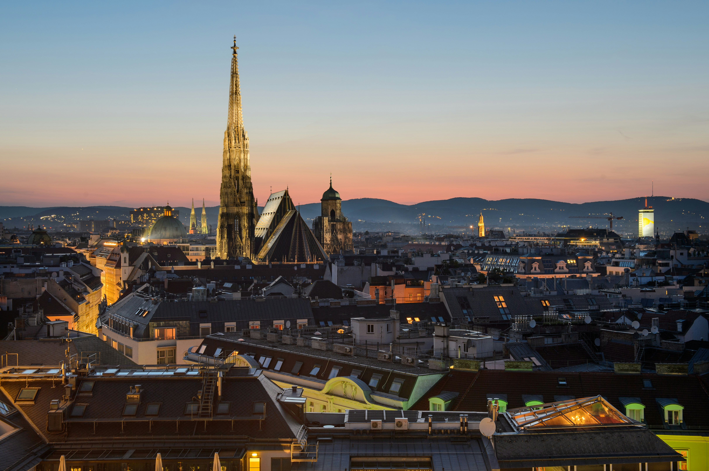

Diagramación de un blog
Articulo destacado de la semana
Italia es un país que cautiva los sentidos y la imaginación con su mezcla única de historia milenaria, arte incomparable, paisajes encantadores y una cultura vibrante. Desde las ruinas del Imperio Romano hasta las obras maestras del Renacimiento, Italia ha sido cuna de grandes civilizaciones y movimientos culturales que han dejado una huella imborrable en el mundo. Este artículo te invita a descubrir los múltiples rostros de Italia: sus ciudades llenas de vida, su exquisita gastronomía, sus tradiciones arraigadas y su gente apasionada. Un recorrido por un destino que no solo se visita, sino que se vive intensamente.
Leer másDescubre Suiza

Suiza es un país reconocido por su impresionante belleza natural, su estabilidad y su alta calidad de vida. Ubicado en el corazón de Europa, ofrece paisajes de ensueño con majestuosos Alpes, lagos cristalinos y encantadores pueblos. Además de ser famosa por su precisión relojera, su delicioso chocolate y su sistema financiero sólido, Suiza también destaca por su diversidad cultural, con cuatro idiomas oficiales y una rica mezcla de tradiciones. Es un destino ideal tanto para los amantes de la naturaleza como para quienes buscan seguridad, orden y excelencia en cada detalle.
Descubre Austria
Austria es un país lleno de encanto, historia y cultura en el corazón de Europa. Conocido por sus majestuosos paisajes alpinos y su rica herencia musical, es la tierra natal de compositores como Mozart y Strauss. Ciudades como Viena y Salzburgo deslumbran con su arquitectura imperial, museos de clase mundial y cafés tradicionales. Austria combina la elegancia de su pasado con una vida moderna vibrante, ofreciendo a los visitantes una experiencia única que une naturaleza, arte y hospitalidad.